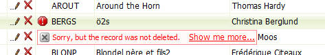

Grid Component - SQL Database Errors
You can now customize the text that is displayed when the SQL Database reports an Insert, Update or Delete error.
By default, Alpha Five displays this text for an Update, Delete or Insert Error:
�Record was not updated.
�Record was not deleted.
�Record was not inserted.
You can customize this message by going to Grid Properties, Advanced, Other Properties and then setting these property values, as shown in this example:
dim tmpl.errors.updateError as c = default "Sorry, but the record was not updated. "
dim tmpl.errors.deleteError as c = default "Sorry, but the record was not deleted. "
dim tmpl.errors.insertError as c = default "Sorry, but the record was not inserted."
dim tmpl.errors.showMore as c = default "Show me more..."
dim tmpl.errors.showLess as c = default "Show me less..."
The screen below shows how an error is rendered with custom error text.
